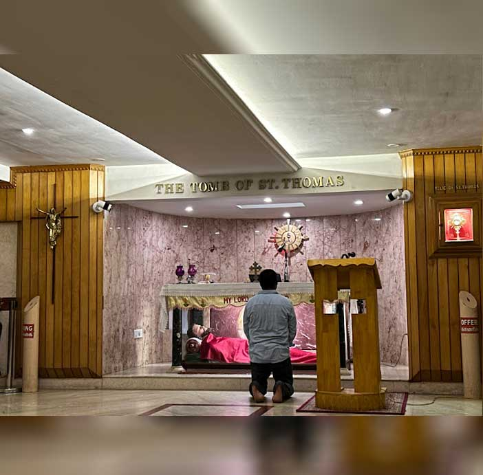
குரு : தந்தை , மகன் , தூய ஆவியாரின் பெயராலே
எல் : ஆமென்
குரு : தம் அன்பு சீடரை நம் நாட்டிற்கு அனுப்ப திருவுளமான இறைமகனாகிய இயேசு கிறிஸ்துவின் அருளும், கடவுளின் அன்பும் தூய ஆவியின் நட்புறவும் உங்கள் அனைவரோடும் இருப்பதாக
எல் : உம் ஆன்மாவோடும் இருப்பராக
குரு : கிறிஸ்துவுக்காக இரத்தம் சிந்தி வேதசாட்சியாய், அடக்கம் செய்யப்பட்டிருக்கும் இப்பேராலயத்தில் புனித தோமையாரை நாடி வந்திருக்கும் நாம் அனைவரும் மூவொரு இறைவனின் அருளை வேண்டுவோமாக.
எல்லாம் வல்ல பரமதந்தையே ! புனித தோமையாரை எங்கள் விசுவாசத்தின் சாட்சியாகவும், எங்கள் பாதுகாவலராகவும் தந்தருளதிருவுளமானீரே ! அந்த அன்புசீடரின் வழியை பின்பற்றி வாழும் எங்களை உமது ஆசீரால் நிரப்பியருளும்.
அன்புத் தந்தையின் ஒரே மகனாகிய இயேசுவே ! நீர் உயிர்த்தபோது
உம் அன்பு சீடருக்கு காட்சி தந்து " என் ஆண்டவரே ! என் தேவனே ! ” ,
என பறைசாற்ற செய்து விசுவாசத்தை உறுதிபடுத்தினிரே ! அவரை வாழ்த்தி வணங்கும் நாங்களும் விசுவாச செயல்களால் உமக்கு சான்று பகர உமது ஆவியின் வல்லமையை பொழிந்தருளும் !
அன்பே உருவான தூய ஆவியே ! எம் ஆன்மாவின் ஆன்மாவே ! புனித தோமையாரை மகிமைப் படுத்த கூடியிருக்கும் எங்களை உமது ஆலயங்களாக மாற்றி வீரமிக்க விசுவாசிகளாய் வாழச் செய்தருளும்!
எல் : ஆமென்
1. அப்போஸ்தலரான தூய தோமையாரை மாபெரும் கொடையாக எம் நாட்டிற்கு அனுப்பிய உம் திட்டத்திற்காக ...
2. எங்கள் மத்தியில் உமது நற்செய்தியை பரப்பி உமது மகன் இயேசுவை எங்கள் ஆண்டவரே எங்கள் தேவனே என்று வெளிப்படுத்தியதற்காக ...
3. தூய தோமையார் உமக்காக இரத்தம் சிந்தி அளித்த வல்லமையை இன்றும் எங்களுக்கு தருவதற்காக ...
4. தூய தோமையாருடைய திரு இரதத்தினால் நாங்கள் வாழும் இம்மண்ணை புனிதப் படுத்தியதற்காக ...
5. மயிலை அன்னையின் மகிமையை தூய தோமையாரின் வழியாகப் பெற்றதற்காக ....
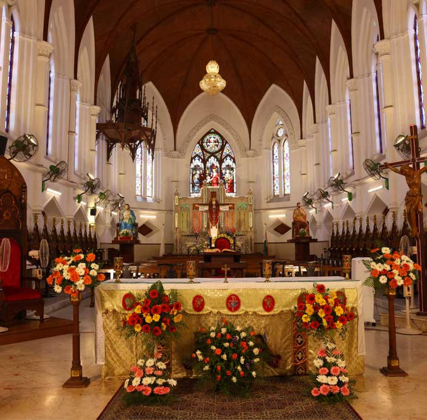
6. தூய தோமையாருடைய திருவுடல் அடங்கிய கல்லறை எம் பேராலயத்தில் இடம்பெற செய்ததற்காக ...
7. தூய தோமையாரின் போதனை மற்றும் புதுமைகள் வழியாக ஆயிரக்கணக்கான மக்களை திருச்சபையில் சேர்த்ததற்காக ....
8. இப்பேராலயத்தை நாடிவரும் அனைவரையும் தூய தோமையாரின் வேண்டுதலால் நிறைவாய் ஆசிர்வதிப்பதற்காக ...
9. சந்தேகப்படுவோர், கவின் கலைஞர்கள், பார்வையற்றோர், கட்டிடக்கலைஞர், நில அளவையாளர்கள், இறையியலார்கள், அனைவருக்கும் தூய தோமையாரை பாதுகாவலராக அளித்ததற்காக ...
10. புனித தோமையாரை எங்கள் உயர் மறைமாவட்டத்திற்கு பாதுகவலராக கொடுத்ததற்காக ...
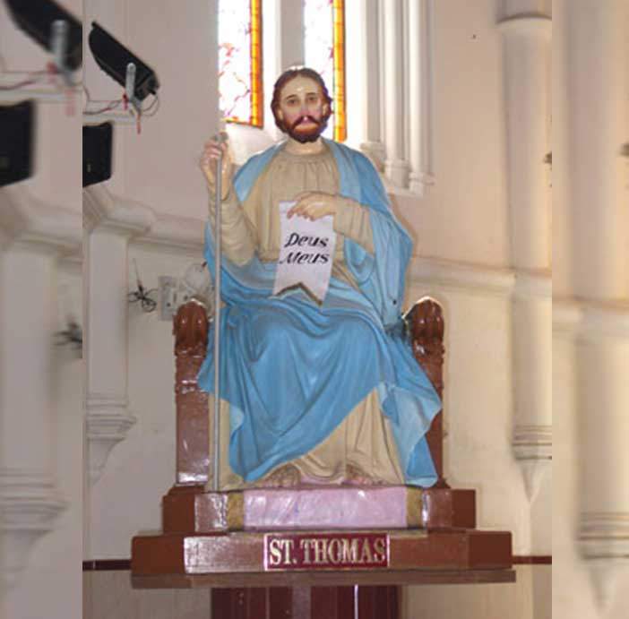
இந்தியாவின் அப்போஸ்தலரே ! புனித தோமையாரே ! எங்கள் உயர் மறைமாவட்ட பாதுகாவலரே ! கிறிஸ்துவுக்காக இரத்தம் சிந்தி நற்செய்தியை அறிவித்தவரே ! நாங்கள் உம்மை வாழ்த்துகிறோம் ! எங்கள் இந்திய மண்ணில் விசுவாசத்தை அறிவித்ததற்காக உமக்கு நன்றி செலுத்துகிறோம். ' என் ஆண்டவரே, என் தேவனே ' என்று கிறிஸ்துவின் மேல் இருந்த விசுவாசத்தை நீர் அறிக்கையிட்டது போல் நாங்களும் கிறிஸ்துவின் மேல் ஆழ்ந்த பற்று கொள்ளவும், அவரை ஆவலோடு பின்பற்றவும், விசுவாசத்திற்காக உயிரை அளிக்க தயாராயிருக்கவும் உமது பரிந்துரையை நாடுகிறோம். எங்கள் பாதுகாவலரான புனித தோமையாரே ! வாழ்விலே ஏற்படும் ஏற்றத் தாழ்வுகளையும், நிகழும் துன்ப துயரங்களையும் எதிர்கொள்ளவேண்டிய சக்தியைப் பெற்றுத் தாரும் !
இங்கு கூடியிருப்போர் அனைவரின் தேவைகளும் நிறைவேற மன்றாடும் ! எம் உயர் மறைமாவட்டதில் விசுவாச விழிப்புணர்வும், சாட்சிய வாழ்வும் சுடர்விட ஆவியின் வரங்களைப் பெற்றுத் தாரும் ! இந்த வேண்டுதல்களை எல்லாம் உம் பேறுபலன்களினால் பெறுவோம் என நம்புகிறோம். எங்கள் பாதுகாவலரான புனித தோமையாரே எங்களுக்காக வேண்டிக்கொள்ளும் ! - ஆமென் .
ஆண்டவரே இரக்கமாயிரும்
கிறிஸ்துவே இரக்கமாயிரும்
ஆண்டவரே இரக்கமாயிரும்
கலிலேயா நாட்டிலே உயர்ந்த கோத்திரத்தில் பிறந்த புனித தோமையாரே ..
சமாதானத்துக்குரிய நற்செய்தியை பக்தி பற்றுதலுடன் போதித்த புனித தோமையாரே
தம் தந்தையின் சொற்படியே அவர் தொழிலை செய்துவந்த தோமையாரே.
இயேசுவை உண்மையான உலக மீட்பரென விசுவசித்த புனித தோமையாரே.
இயேசுவின் பன்னிரு சீடர்களுள் ஒருவராக தெரிந்துக்கொள்ள பெற்ற புனித தோமையாரே.
இயேசு உயிர்த்தெழுந்த பின்பு, நான் அவர் திருக்காயங்களில் என்னுடைய விரலை வைத்துப் பார்த்தாலொழிய விகவசியேனென்ற புனித தோமையாரே.
உயிர்த்த இயேசு உமக்கு தரிசனையாகவே, அவரைக் கண்டு மகிழ்ந்து, ' என் ஆண்டவரே, என் தேவனே ' என்று பறைசாற்றிய புனித தோமையாரே.
இயேசுவின் உயிர்ப்புக்கு புகழ்பெரும் சாட்சியாய் அமைந்த புனித தோமையாரே.
கண்டு விசுவசிப்பதைவிட காணாமல் விசுவசிப்பவர்கள் பேறுபெற்றோர் என்று சொல்லக்கேட்ட புனித தோமையாரே.
தேவதாயாரை மிகவும் நேசித்த புனித தோமையாரே.
தேவதாயாரின் அடக்கத்திற்கு மிகவும் ஆவலுடன் ஒடிவந்த புனித தோமையாரே.
பரிசுத்த ஆவியினால் ஏவப்பட்டு தேவதாயும் அப்போஸ்தலர்களும், ஒன்றிணைந்து ஜெபித்த சபையிலே, மேதியா முதலான நாடுகளில் நற்செய்தி அறிவிக்க அழைக்கப்பட்ட புனித தோமையாரே.
கிறிஸ்துவை ஏற்றுக் கொள்ளாத நாடுகளிலே தனக்கு வரவிருக்கும் துன்பங்ளையும், அவமானத்தையும் நினைத்து மகிழ்ச்சிக்கொண்ட புனித தோமையாரே.
இயேசுவையும், தேவதாயாரையும் நினைத்து, இரவும் பகலும் விண்ணை நோக்கிக் கையேந்தி இடைவிடாமல் ஜெபித்துக் கொண்டிருந்த புனித தோமையாரே.
பரிசுத்த ஆவியால் ஏவப்பட்டு கிறிஸ்துவை போதிக்கும்போது சம்மனசை போல காணப்பட்ட புனித தோமையாரே.
உயிரையும் உடலையும் பொருட்படுத்தாமல் எல்லா மக்களையும் உண்மையின் ஒளிக்கு அழைத்து சென்ற புனித தோமையாரே.
மோட்சத்தின் வரங்களைத் தாங்கிய உன்னத மரக்கலமாகிய புனித தோமையாரே.
இயேசுவைக் காணவந்த மூன்று ஞானிகளுக்கு திருமுழுக்கு அளித்து திருமறையின் உண்மைகளை கற்பித்த புனித தோமையாரே.
மேலை நாட்டில் திருஅவையை உருவாக்கிய புனித தோமையாரே.
கேரளத்தில் ஏழு கோயில்களை எழுப்பிய புனித தோமையாரே.
சென்னை மயிலாப்பூரில் பல ஆண்டுகளாக நற்செய்தியைப் போதித்த புனித தோமையாரே.
சின்னமலையில் அற்புதமான நீர் ஊற்றைச் சுரக்கச் செய்த புனித தோமையாரே.
பெரியமலையில் சிலுவை செதுக்கி இரத்தம் கசிந்ததால் பல புதுமைகளைச் செய்த புனித தோமையாரே.
கடலில் சுற்றிவந்த மிகப்பெரிய மரத்தை அநேகரால் முடியாத நிலையில் தனது இடுப்பில் இருந்த கயிற்றினாலே கட்டி, சிலுவை அடையாளத்தை வரைந்து இழுத்துக்கொண்டு கரைசேர்த்த புனித தோமையாரே.
பல வல்லமையான செயல்களால் மக்களை யேசுவிடம் ஈர்த்த புனித தோமையாரே.
மரணம் அடைந்த குழந்தையை கடவுளின் வல்லமையினால் உயிர்பித்த புனித தோமையாரே.
தனக்குபின் புனித சவேரியார் சிந்து நாட்டிற்கு வரப்போகின்றதை முன்னதாகவே உணர்ந்துக்கொண்டு மக்களுக்கு வெளிப்படுத்தின புனித தோமையாரே.
ஈட்டியினால் குத்தப்பட்டு மனமகிழ்வோடு வேதசாட்சி முடி பெற்று, நித்திய காலமும் இறைவனோடு வாழ ஆசிபெற்ற புனித தோமையாரே.
எங்கள் உயர் மறைமாவட்டதின் பாதுகாவலரான புனித தோமையாரே.
உலகின் பாவங்களை போக்கும் இறைவனின் செம்மறியே! எங்கள் மேல் இரக்கமாயிரும்.
உலகின் பாவங்களை போக்கும் இறைவனின் செம்மறியே! எங்கள் மன்றாட்டைஏற்றருளும்.
உலகின் பாவங்களை போக்கும் இறைவனின் செம்மறியே! எங்களைத் தயவுபண்ணி இரட்சியும்.
எங்கள் பேரிலே கொண்ட அன்பினாலே எங்களுக்காக உயிர்துறந்த இயேசுவே! உமது ஊழியராகிய புனித தோமையாரைக் கொண்டு எம் பாரத மண்ணில் நற்செய்தி போதிக்க திருவுளமானீரே ! அவருடைய பேறுபலன்களினாலே நாங்கள் எப்போதும் இறைவனுக்கு ஏற்புடையவராக வாழவும், விசுவாசத்தில் நிலைத்திருக்கவும் " என் ஆண்டவரே, என் தேவனே " என துணிவோடு சான்று பகரவும் அருள் தாரும். -ஆமென்
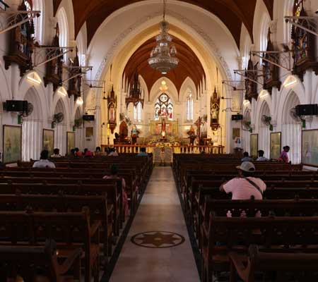
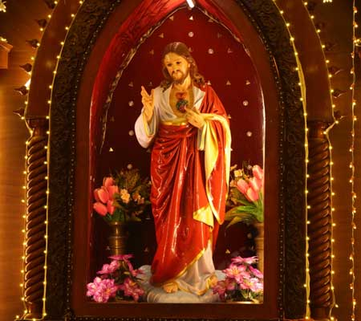
அன்பு தந்தையே இறவைா! அப்போஸ்தலரான புனித தோமையாரை எம் இந்திய நாட்டிற்கு நற்செய்தி அறிவிக்க அனுப்பியதற்காக உமக்கு நன்றி கூறுகின்றோம். அவர் வழியாக எண்ணற்ற நோயாளிகளைக் குணப்படுத்தினீர். துன்புறுவோருக்கு துணையானீர், ஆறுதல் அற்றவர்களுக்கு ஆறுதல் அளித்தீர். வருந்தி வாழ்வோரை பலப்படுத்தினீர். இன்று உம் பேராலயத்தை நாடிவரும் எல்லா மக்களையும் , நவநாளில் பக்தியோடு பங்கேற்கும் அனைவரையும் நிறைவாக ஆசிர்வதியும், தீராத வியாதியிலிருந்தும் துன்ப துயரங்களிலிருந்தும் , மனக் கவலைகளிலிருந்தும் பலவிதமான தீய சக்திகளின் அடிமைத் தனங்களிலிருந்தும் எங்களை விடுவித்து, நாங்கள் உடல் நலனும், மன அமைதியும் பெற்று உமக்கு சாட்சியம் பகர புனித தோமையாரின் வல்லமையுள்ள பரிந்துரையால் உம்மை வேண்டுகின்றோம். -ஆமென்!
குரு : எல்லா மனித இதயங்களிலும் பிரசன்னமாக இருந்து செயல்படும் இறைவன் உங்களை வாழ்வின் உண்மையான வழியில் நடத்தி செல்வாராக!
எல் : ஆமென்.
குரு : மனித இதயங்களை ஒளிர்விக்கும் இறைவன் உயிர்த்த இயேசுவின் அமைதியால் உங்கள் குடும்பங்களை ஆசீர்வதிப்பராக!
எல் : ஆமென்.
குரு : நிறைவாழ்வு அளிக்கும் இறைவன் உங்களை வாழ்வளிக்கும் ஆவியால் நிரப்புவாராக!
எல் : ஆமென்.
குரு : எல்லாம் வல்ல இறைவன் தந்தை, மகன், தூய ஆவியார் உங்கள் அனைவரையும் ஆசீர்வதிப்பாராக!
எல் : ஆமென்.
குரு : கிறிஸ்துவுக்கு சாட்சியம் பகர அமைதியில் சென்றுவாருங்கள்!
எல் : இறைவனுக்கு நன்றி.
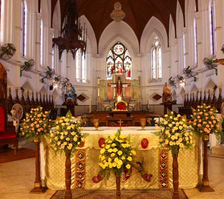
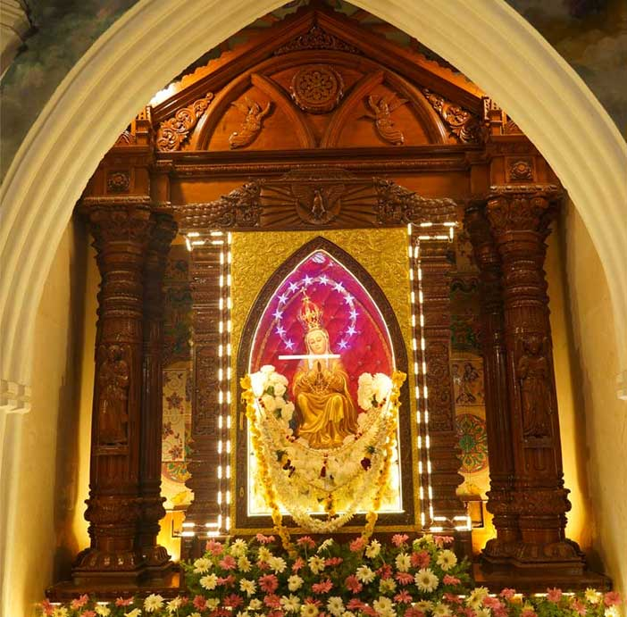
அம்மா எங்கள் மயிலைத் தாயே
அருள் நிறைந்த மரி நீயே
அண்டிவந்தோம் ஆதரிப்பாய்
நம்பி வந்தோம் காத்திடுவாய்
வாழ்க வாழ்க மரியே
எங்கள் மயிலை அன்னையே…
எம்மோடு வீற்றிருப்பவளே, அம்மா, அம்மா
எம்மை என்றும் காப்பவள் நீயே…
எம்மோடு வாழ்பவள் நீயே…
எல்லா வரமும் தருபவள் நீயே
குரு: தந்தை, மகன், தூய ஆவியின் பெயராலே
எல்: ஆமென்
குரு: நமது மீட்புக்காக கன்னி மரியாளிடமிருந்து பிறக்கத் திருவுளமான இறைமகனாகிய இயெசு கிறிஸ்துவின் அருளும் ஆசிரும் உங்கயோடு என்றும் இருப்பதாக.
எல்: உம் ஆன்மாவோடும் இருப்பதாக.
குரு:திருமயிலை மாதாவின் பேராலயத்தை நாடி வந்திருக்கும் நாம் அனைவரும் மூவொரு இறைவனின் அருளை வேண்டுவோமாக.
எல்:எல்லாம் வல்ல பரம தந்தையே, உமது அன்பு மகளாம் திருமயிலை மாதாவை எங்களுக்கு என்றும் பாதுகாப்பளிக்கும் தாயாக தந்தருள திருவுளமானீரே அந்த திருமயிலை மாதாவைப் போற்றி புகழ் கூடியிருக்கும் எங்களை உமது ஆசீரால் நிரப்பியருளும்.
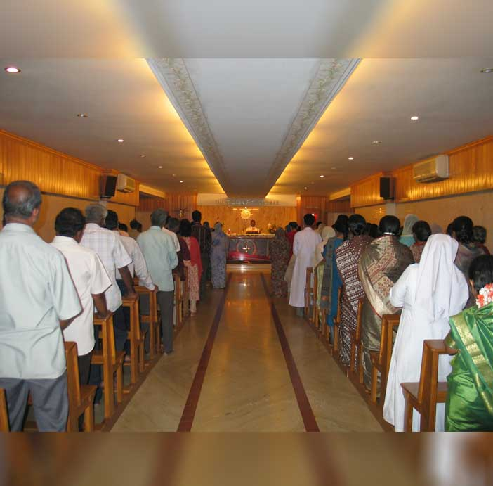
அன்புத் தந்தையின் ஒரே மகனாகிய இயேசுவே கன்னித்தாய் ஈன்றெடுத்த தவப் புதல்வனே நீர் சிலுவையில் தொங்கியபோது உம் தாயை எங்கள் அனைவருக்கும் தாயாகத் தந்தருளினீரே அத்தாயை நாங்கள் அனைவரும் எங்கள் தாயாக ஏற்று அவள் மன்றாட்டின் பலனை நாங்கள் அடைய எங்களுக்கு ஆசீர் அருளும்.
அன்பே உருவான தூய ஆவியே, உமது பத்தினியாகிய கன்னி, மரியாளை மகிமைப்படுத்தக் கூடியிருக்கும் எங்களை உமது பரிசுத்த ஆலயங்களாக மாற்றியருளும் உமது தூய அன்பினால் நிரப்பியருளும்.
குரு: நம் தாயாம் மரியன்னையை புகழ்வோம்.
எல்: தயை மிகு தாயே
எம் அரசியே வாழ்க எம் உயிரே, இன்பமே. நம்பிக்கையே, வாழ்க பரிதேசிகளாயிருக்கிற நாங்கள் ஏவையின் மக்கள் உம்மை நோக்கிக் கூப்பிடுகின்றோம். கண்ணீர் மிகு இவ்வுலகினின்று உம்மை நோக்கி பெருமூச்சுடன் வேண்டுகின்றோம். ஆதலால் எங்களுக்காக வேண்டி மன்றாடுகின்ற தாயே, தயை நிறைந்த உம் திருக்கண்களை எங்கள் மீது திருப்பியருளும். இதனின்றியே நாங்கள் இந்தப் பிரதேசம் கடந்த பிற்பாடு உம்முடைய திருவயிற்றின் கனியாகிய இயெசு நாதருடைய திருக்காட்சியை எங்களுக்குத் தந்தருளும் தயாபரியே, அன்புத் தாயே, இன்பமிகு கன்னி மரியே ஆமென்.
குரு: நம் ஆன் சரீர நன்மைகளுக்காக மன்றாடுவோமாக.
எல்: மரியே மயிலை அன்னையே.
உமது புனித உருவை, எத்தனையோ பேர் சூழந்து நின்று தங்களுக்கு வேண்டியதை மன்றாடி, உமது இரக்கத்தால் அவைகளை அடைகிறார்கள்.
ஆதரவற்றவர்களுக்கு நம்பிக்கையையும், அடைக்கலமும் உதவியும் நீரே என்று எல்லோரும் உம்மைப் போற்றுகிறார்கள்.
அன்னைக்குரிய உமது அரவணைப்பை எல்லோரும் உணருகிறார்கள்.
எனவே, ஆதரவற்றநிலையில் நம்பிக்கையோடு உம்மை வேண்டி வருகின்றோம்.
அன்புள்ள தாயே, எத்தனையோ துன்பங்களுக்கு நாங்கள் ஆளாகி இருக்கிறோம். எத்துணையோ நன்மைகள் எங்களுக்கு தேவையாய் இருக்கின்றன.
துன்ப துயரங்கள் எங்களை சிறுமைப்படுத்துகின்றன. எங்கள் இதயம் வருத்தத்தால் நிறைந்துள்ளது. மிகவும் இரக்கமுள்ள மாதாவே, இது போன்ற சமயங்களில் எங்கள் மீதும் எங்கள் குடும்பங்கள் மீதும் இரக்கமாயிரும். முக்கியமாக இப்போது எங்களுக்குத் தேவையான இந்த விசேஷ அருளை பெற்றுத்தாரும். (மௌனம்… தேவை இன்னதென்று சொல்லவும்)
எங்கள் துன்பத்தில் ஆறுதல் அளியும் நோய்களை நிக்கி, நற்சுகம் தாரும், அல்லது எமது துன்பங்கள் எம்மை விட்டு நீங்குவது இறைவனின் திருவுளம் இல்லையெனில், அவற்றை எமது ஆன்மாவின் அழியாத பேரின்ப நன்மைக்காக அனுபவிக்க வேண்டுமென்பது இறைவனின் விருப்பமெனில் அவற்றை பொறுமையோடு ஏற்றுக்கொள்ளும் உறுதியை பெற்றுத்தாரும்.
அன்னையே, எம்மன்றாட்டை கேட்டருள்வீர் என்று நம்புகின்றோம். மயிலை அன்னை என்று எங்கள் முன்னோர்கள் உம்மைப் போற்றி வணங்கியதைப் போன்ற விசுவாசத்தையும் எங்களுக்கு தந்தருளும். ஆமென்.
விண்ணுலகில் இருக்கிற எங்கள் தந்தையே உமது பெயர் தூயது எனப் போற்றப் பெறுக! உமது ஆட்சி வருக! உமது திருவுளம் விண்ணுலகில் நிறைவேறுவது போல, / மண்ணுலகிலும் நிறைவேறுக! எங்கள் அன்றாட உணவை இன்று எங்களுக்குத் தாரும். / எங்களுக்கு எதிராக குற்றம் செய்வோரை / நாங்கள் மன்னிப்பது போல. / எங்கள் குற்றங்களை மன்னியும். எங்களைச் சோதனைக்கு உட்படுத்தாதேயும். / தீயோனிடமிருந்து எங்களை விடுவித்தருளும் ஆமென்.
அருள் மிகப்பெற்ற மரியே வாழ்க / ஆண்டவர் உம்முடனே / பெண்களுக்குள் ஆசி பெற்றவர் நீரே உம்முடைய திருவயிற்றின் கனியாகிய / இயேசுவும் ஆசி பெற்றவரே.
தூய மரியே / இறைவனின் தாயே / பாவிகளாய் இருக்கிற எங்களுக்காக / இப்பொழுதும் எங்கள் இறப்பின் வேளையிலும் / வேண்டிக்கொள்ளும். / ஆமென்.
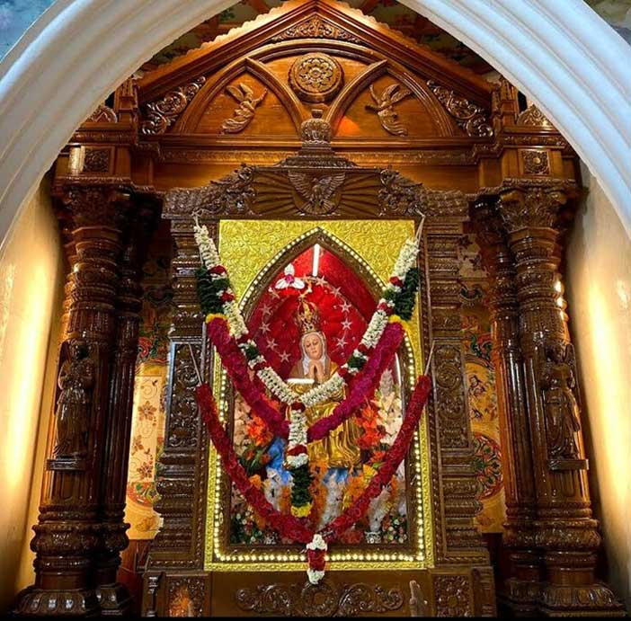
மிகவும் இரக்கமுள்ள தாயே, உம்மிடம் அடைக்கலம் நாடி வந்து ஆதரவைத்தேடி மன்றாடினோர் எவரையும் நீர் கைவிட்டதாக ஒருபோதும் உலகில் சொல்லக் கேட்டதில்லை, என்பதை நினைத்தருளும். கன்னியர்களுக்கு அரசியான கன்னியே நீர் அடைக்கலம் தருபவர் என்னும் நம்பிக்கை என்னை தூண்டுவதால் நான் உமது திருவடியை நாடி வருகிறேன். பாவியாகிய நான் உமது இரக்கத்திற்காக துயரத்தோடு உம் திருமுன் காத்து நிற்கிறேன். மனிதராக பிறந்த வார்த்தையின் தாயே, என் மன்றாட்டை புறக்கணியாமல் கேட்டருளும்.
பிறப்புநிறை பாவமின்றி கருவுற்ற தூய மரியே, பாவிகளுக்கு அடைக்கலமே, இதோ உம்முடைய அடைக்கலம் நாடி ஓடி வந்தோம். எங்கள் மீது இரக்கம்கொண்டு எங்களுக்காக உம்முடைய திருமகனிடம் வேண்டிக்கொள்ளும். ஆமென்.
ஆண்டவரே இரக்கமாயிரும்
கிறிஸ்துவே இரக்கமாயிரும்
ஆண்டவரே இரக்கமாயிரும்
கிறிஸ்துவே எங்கள் மன்றாட்டைக் கேட்டருளும்
எங்களை படைத்து பராமரிக்கின்ற விண்ணகத் தந்தையாகிய இறைவா!
எங்கள் மேல் இரக்கமாயிரும்.
கருணையோடு எங்களை மீட்க வந்த சுதனாகிய இறைவா!
எங்கள் மேல் இரக்கமாயிரும்.
எங்கள் துணையாளரான தூய ஆவியாம் இறைவா!
எங்கள் மேல் இரக்கமாயிரும்.
நன்மையும், தூய்மையும், வல்லமையும் நிறைந்த மூவொரு இறைவா!
எங்கள் மேல் இரக்கமாயிரும்.
இறைவனின் தாயே! எங்கள் மேல் இரக்கமாயிரும்.
இறைவனின் தாயே, எங்கள் புனித மயிலை மாதாவே! எங்களுக்காக
வேண்டிக்கொள்ளும்.
அழகோவியமாய் வீற்றிருக்கும் புனித மயிலை மாதாவே…
பொன்னிறமாய் காட்சி தரும் புனித மயிலை மாதாவே…
இறைவனின் விருப்பத்தை பொறுமையோடு ஏற்றுக்கொண்ட புனித
மயிலை மாதாவே…
விண்ணுலக வரங்களைத் தாங்கி, வாரி வழங்கிட தயங்காத புனித மயிலை
மாதாவே…
இறைவனின் அரும் செயல்களை எண்ணி, தியானிக்கும் கோலத்தில்
அமர்ந்திருக்கும் புனித மயிலை மாதாவே…
இயேசுவின் பாடுகளை எங்களுக்கு நினைவூட்டும் விதமாய் உருக்கமான
தோற்றம் கொண்ட புனித மயிலை மாதாவே…
இருகரங்கள் இணைத்தவளாய் இறைவனோடு எங்களை இணைக்க
இடைவிடாது மன்றாடும் புனித மயிலை மாதாவே…
கற்பின் அணிகலனாய் இருந்து, கற்புக்கு களங்கம் வராமல் காத்திடும்
புனித மயிலை மாதாவே…
உமது அன்பில் வாழும் மக்களை இன்றளவும் எல்லா இயற்கைச்
சீற்றத்தினின்று காத்துவரும் புனித மயிலை மாதாவே…
உம்மை அதிகம் நேசித்த புனித தோமையாருக்கு ஆன்மீக பலமாய் இருந்த
புனித மயிலை மாதாவே…
புனித தோமையாரின் கல்லறையருகே கனிவோடு காட்சிதரும் புனித
மயிலை மாதாவே…
இந்தியாவின் அப்போஸ்தலரான புனித தோமையாரின் கல்லகறைக்கும்
ஆலயத்திற்கும் பெருமை சேர்க்கும் புனித மயிலை மாதாவே…
புனித சவேரியாரின் செபத்துக்கு செவிமடுத்த குனித மயிலை மாதாவே…
சாத்தானை வெற்றி கொள்ள புனித சவேரியாருக்கு சக்தியைப் பெற்றுத்
தந்த புனித மயிலை மாதாவே…
புனித சவேரியாரின் இறைப்பணி தாகத்திற்கு ஊற்றான புனித மயிலை
மாதாவே…
சென்னை மயிலை மறைமாவட்டத்தின் பாதுகாவலியான புனித மயிலை
மாதாவே….
உமது பக்தர்களுக்காக இடைவிடாது இறைவனை மன்றாடும் புனித
மயிலை மாதாவே…
அண்டி வருவோரை நல்வழி நடத்தும் புனித மயிலை மாதாவே…
பில்லி, சூனியம், பொன்ற தீய ஆவியின் கட்டுகளிலிருந்து விடுதலை தரும்
புனித மயிலை மாதாவே…
எங்கள் எல்லோருக்கும் அன்னையே, இறைவனின் தாயே எங்கள் புனித
மயிலை மாதாவே…
உலகின் பாவங்களைப் போக்கும் இறைவனின் செம்மறியே,
எங்கள் பாவங்களைப் பொறுத்தருளும் எங்கள் மன்றாட்டைக்
கேட்டருளும்
எங்கள்மேல் இரக்கமாயிரும்
இயேசு கிறிஸ்துவின் வாக்குறுதிகளுக்கு நாங்கள்
தகுதியுள்ளவர்களாகும்படி
இறைவனின் அன்னையே! எங்களுக்காக மன்றாடும்.
அம்மா, எங்கள் மயிலை மாதாவே, அளவற்ற கருணையும், அன்பும், பரிவும், கொண்டவளே, உடது அன்பை நாங்கள் அறியவும், உமது பரிந்துரையை நாங்கள் உணரவும், உமது திருமகன் எங்களுக்காக பட்ட பாடுகளை நாங்கள் தியானிக்கவும், உதவி புரியும். இதனால் நாங்கள் தீய வழிகளை விட்டு விலகி விண்ணக நலன்களை அபரிவிதமாய் பெற்று மகிழ வேண்டிக்கொள்ளும்.
ஆமென்.
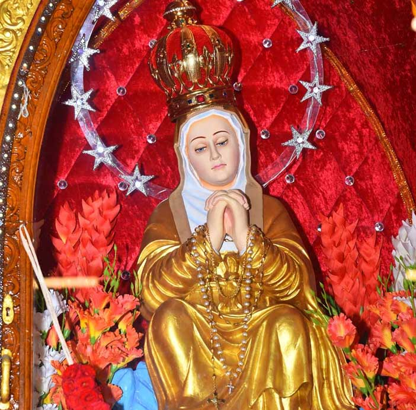
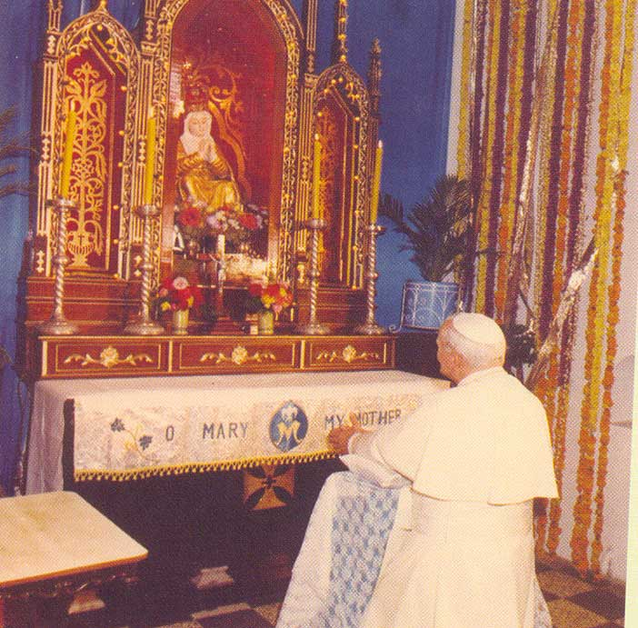
குரு: அன்னையின் அன்பு பக்தர்களே, தந்தையாம் இறைவனிடம் நம் கருத்துக்கள், தேவைகள் அனைத்தையும் எளிய காணிக்கையாக ஒப்புக்கொடுத்து நமது விண்ணப்பங்களை நிறைவேற்றிக் கொடுக்குமாறு நம் திருமயிலை மாதாவின் வழியாக மன்றாடுவோம்.
1 : எங்கள் திருத்தந்தை, ஆயர்கள், குருக்கள். துறவியர், இறைமக்கள் அனைவரும் திருச்சபையின் வளமைக்கு உதவிடும் வற்றாத ஊற்றாக விளங்கவேண்டுமென்று…
எல்: எங்கள் திருமயிலை மாதாவின் வழியாக ஆண்டவரே உம்மை மன்றாடுகிறோம்.
2 : தவறி நடப்போர் திருந்தவும், நிம்மதியற்று வாழ்வோர் நிம்மதி பெறவும், வறுமையுற்றோர் வளம் பெற வேண்டுமென்று.
எல்: எங்கள் திருமயிலை மாதாவின் வழியாக ஆண்டவரே உம்மை மன்றாடுகிறோம்.
3: இந்த நவநாள் பக்தி முயற்சிகளை செய்யும் இளைஞர்களும், இளம் பெண்களும் தங்கள் எதிர்கால வாழ்வை தெரிந்து கொள்வதில் பரிசுத்த ஆவி அவர்களுக்கு வழிகாட்ட வேண்டுமென்று.
எல்: எங்கள் திருமயிலை மாதாவின் வழியாக ஆண்டவரே உம்மை மன்றாடுகிறோம்.
4: வீடற்றோர்க்குத் தக்க இல்லம் அமையவும் குடும்பங்களில் சமாதானம் நிலவவும், மற்றும் உமது குழந்தைகளாகிய எங்களுக்கு எது எது தேவையோ அவற்றையெல்லாம் அளித்து ஆசீர்வதிக்க வேண்டுமென்று
எல்: எங்கள் திருமயிலை மாதாவின் வழியாக ஆண்டவரே உம்மை மன்றாடுகிறோம்.
5: மரித்த நவநாள் விசுவாசிகளுக்கும், மற்ற மரித்த விசுவாசிகளுக்கும் நித்திய இளைப்பாற்றி தந்தருள வேண்டுமென்று
எல்: எங்கள் திருமயிலை மாதாவின் வழியாக ஆண்டவரே உம்மை மன்றாடுகிறோம்.
6: நோயுற்றோர் நலம் பெறவும், அறுவை சிகிச்சை முதலிய மருத்துவ உதவிகளை நாடுவோர் சிறந்த பலனை அடையவும், மாணவ, மாணவியர் தேர்ச்சிபெறவும் வேண்டுமென்று
எல்: எங்கள் திருமயிலை மாதாவின் வழியாக ஆண்டவரே உம்மை மன்றாடுகிறோம்.
குரு: தனிப்படட விண்ணப்பங்களை எடுத்துக் கூறுவோம் (சற்று நேரம் மௌனம்)
குரு: எல்லாம் வல்ல இறைவா, துன்பப்படுவோரின் தேற்றரவும், பாவிகளுக்கு அடைக்கலமும் பில்லிசூன்யம் போன்ற தீய சக்திகளிலிருந்து விடுதலை தரும் திருமயிலை மாதாவை எமக்கு அன்னையாக அளித்தீரே, இந்த அன்னையின் மேல் நம்பிக்கையும், பக்தியும் கொண்டு அவள் வழியாக நாங்கள் உம்மிடம் கேட்கும் வரங்களை எல்லாம் அளித்தருளும், எங்கள் ஆண்டவரும், உம் திருமகனுமாகிய இயேசு கிறிஸ்துவின் பெயரால் மன்றாடுகிறோம்.
எல்: ஆமென்.
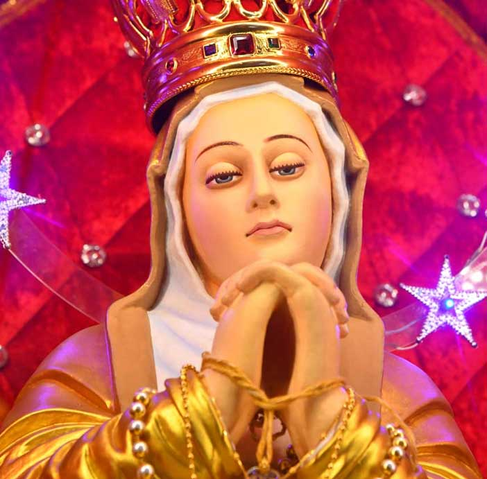
குரு: ஆண்டவர் இயேசு கிறிஸ்து உங்களைப் பாதுகாக்க உங்கள் நடுவிலும் உங்களைக் காப்பாற்ற உங்களுக்குள்ளும் உங்களுக்கு வழிகாட்ட, உங்களுக்கு முன்னும் உங்களுக்குப் பாதுகாவலாக உங்களுக்குப் பின்னும் உங்களை ஆசீர்வதிக்க உங்கள் மேலும் இருப்பாராக.
எல்: ஆமென்
குரு: வல்லமை மிக்க திருமயிலை மாதாவின் மன்றாட்டால் அனைத்து தீமைகளிலிருந்து வியாதி வருத்தங்களிலிருந்தும் நீங்கள் காப்பாற்றப்படுவீர்களாக.
எல்: ஆமென்/
குரு: எல்லாம் வல்ல இறைவன் தந்தை, மகன், தூய ஆவியின் பெயராலே உங்களை என்றும் ஆசீர்வதிப்பாராக.
எல்: ஆமென்
தூய ஆவியின் ஓவியம் நீயே அனைவருக்கும் நீ மயிலை மாதாவே வாழ்க மரியே, வாழ்க தாயே – 2
இறைவனின் ஆவி உன் மீது வர
உன்னத வல்லமை நிழலுமிட – 2
இறைமகன் இயேசுவைக் குழந்தையென் – 2
உந்தன் உதிரத்தில் சுமந்த கன்னித்தாயே
வாழ்க மரியே, வாழ்க மரியே – 2
ஆவியின் வருகைக்கு காத்திருந்த
சீடர்கள் குழுவினில் ஒருங்கிணைந்து – 2
இறைவனைப் புகழ்ந்து ஜெபித்திருந்து – 2
தூய ஆவியில் முழுமை அடைந்த தாயே
வாழ்க மரியே, வாழ்க மரியே – 2
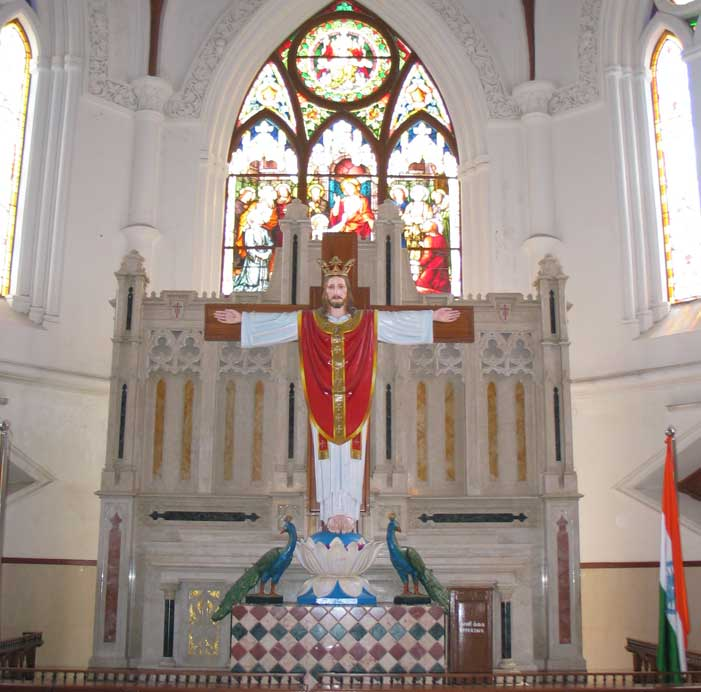
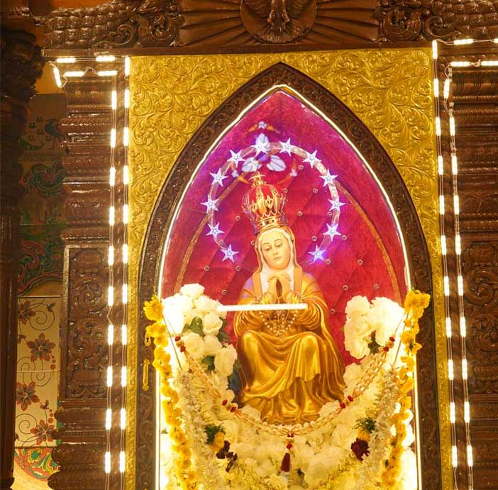
வரம் தந்திடும் நாயகியே,
அமல உற்பவமே அருணோதயமே
அமலனின் அன்னையரே
அல்லலுறும் எமை அன்புடன் காத்து
ஆதரிப்பாய் நீயே….
1. அருள் நிறைந்த மாமரியே
இருள் நிறை இவ்வுலகினிலே
மருள் நிறைஎமக்கொளியினைத் தந்து
பரிவடன் காப்பாயே…
பாவிகட்காகப் பரமனை வேண்டி
பரகதி சேர்ப்பாயே…
பேரிரக்கம் உள்ள இறைவா,
பொது நிலையினரில் / முதல் இந்தி மறைசாட்சியான / புனித தேவ சகாயம் அவர்களுடைய / வல்லமையுள்ள பரிந்துரையால் / எமது நாட்டில் விசுவாசம் தழைக்கவும் / மத நல்லிணக்கம் வளரவும் / குடும்பங்களில் சமாதானம் மகிழ்ச்சி நிலவவும் / எம் உடலில் உள்ள நோய்கள் நீங்கவும் / அருள்புரிய வேண்டுமென / எங்கள் ஆண்டவராகிய கிறிஸ்து வழியாக உம்மை மன்றாடுகிறோம்.
புனித தேவ சகாயமே! எங்களுக்காக வேண்டிக் கொள்ளும் / ஆமென்.
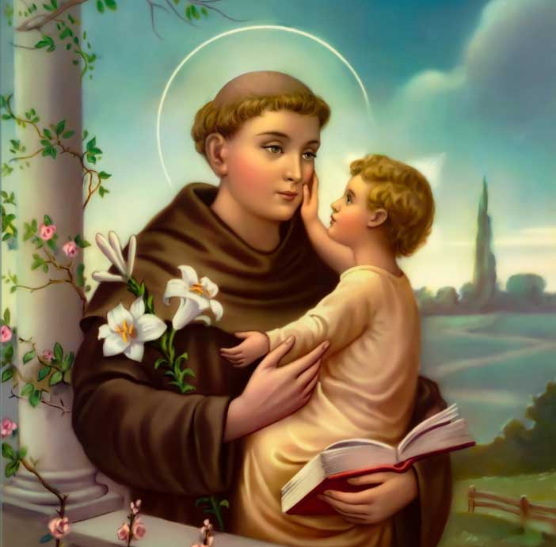
இறைவனது இரக்கத்திற்கும் பேரன்பிற்கும் முற்றும் உரியவரான புனித அந்தோணியாரே உம் வழியாக கடவுளிடம் மன்றாடுபவர்கள் தங்கள் மன்றாட்டின் பலனை அடையாமற் போனதில்லை. எங்கள் ஆன்ம சீரர தேவைகளில் தந்தைக்குரிய அன்புடன் பேருதவி புரிவதற்காக உமக்கு நன்றி செலுத்துகின்றோம். குழந்தை இயேசுவை உமது கரங்களில் ஏந்தப் பாக்கியம் பெற்ற புனித அந்தோணியாரே எங்கள் ஆன்ம விரோதிகளோடு நாங்கள் செய்யும் போராட்டத்தில் எங்களுக்கு துணை புரிவீராக. தீமையை வெல்லவும் நன்மை செய்யவும் பக்கபலமாய் இருப்பீராக. நற்கருணைநாதர் மேல் பக்தியும் இறை வார்த்தையின்மீது நம்பிக்கையும் கொள்ள அருள்புரிவீராக நாங்கள் கேட்பதைத் தட்டாமல் தருகின்ற தயாள மனம் படைத்தவரே.
எங்கள் மனக் கவலைகளில் உமது ஆறுதலையும் நோயில் சுகத்தையும் எதிர்பார்த்து உமது பேருதவி நாடி வருகின்றோம். எங்கள் குடும்பங்களில் சமாதானம் நிலவவும் தொழிலில் முன்னேற்றம் காணவும் மன நிம்மதியோடு வாழவும் உம்மை நோக்கி வேண்டுகின்றோம். எங்களுக்கு உதவி செய்ய வாரும் எங்களைக் கைவிட்டு விடாதேயும். அழியா நாவுடைய புனித அந்தோணியாரே உமது வல்லமையுள்ள மன்றாட்டால் இறைவனது இரக்கத்தையும் உதவியையும் பெற்றவர்களாய் நாங்களும் உம்மோடு என்றென்றும் இறைவனைப் புகழ்ந்தேத்தும் வரம் பெற்றுத் தருவீராக. ஆமென்.
புனித யோசேப்பே உமது அடைக்கலம் மிகவும் மகத்தானது வல்லமை மிக்கது இறைவனின் அனைத்தையும் உமது பாதத்தில் சமர்ப்பிக்கிறேன். உமது வல்லமை மிக்கப் பரிந்துரையால் உம் திருமகனும் எங்கள் ஆண்டவருமாகிய இயேசு கிறிஸ்துவிடம் எங்களுக்குத் தேவையான எல்லா ஆன்ம நலன்களையும் பெற்றுத் தாரும். இதன் வழியாக மறு உலகில் உமக்குள்ள ஆற்றலைப் போற்றி எல்லாம் வல்லத் தந்தையாகிய இறைவனுக்கு நன்றியும், ஆராதனையும் செலுத்துவேன். புனித யோசேப்பே! உம்மையும் உமது திருக்கரத்தில் உறங்கும் இயேசுவையும் எக்காலமும் எண்ணி மகிழ நான் தயங்கியதில்லை. இறைவன் உமது மார்பில் சாய்ந்து தூங்கும் வேளையில் அவரைத் தொந்தரவு செய்ய விரும்பவில்லை.
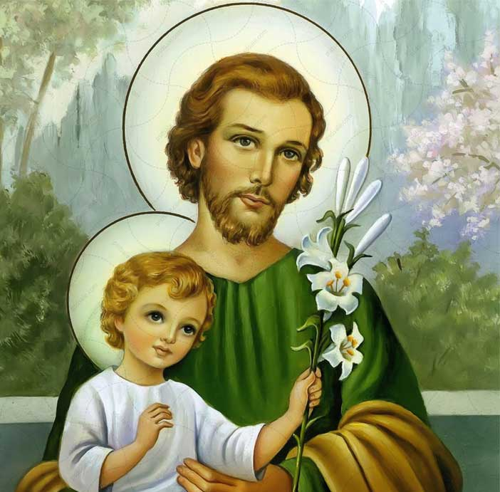
என் பொருட்டு, உமது மார்போடு அவரை இணைத்து அணைத்துக் கொள்ளும். என் பெயரால் அவருக்கு நெற்றியில் முத்தமிடும், நான் இறக்கும் வேளையில் அந்த முத்தத்தை எனக்குத் தரும்படியாகக் கூறும். இறந்த விசுவாசிகளின் ஆன்மாவின் காவலனே, எங்களுக்காக வேண்டிக்கொள்ளும். ஆமென்.
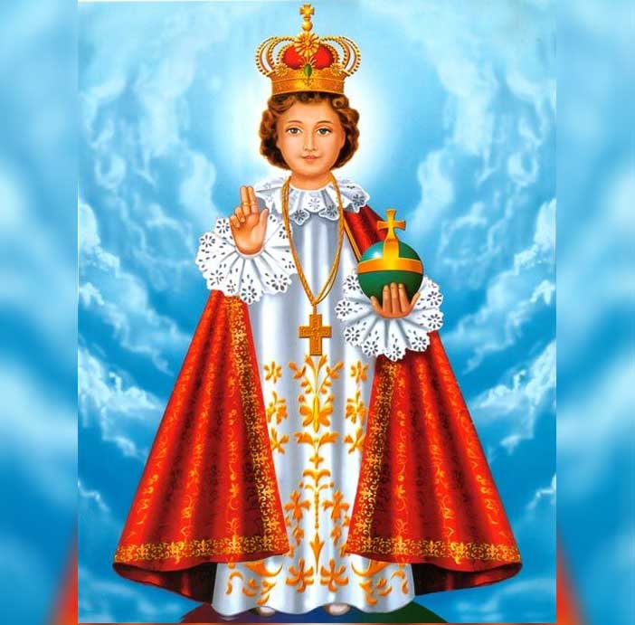
அற்புத குழந்தை இயேசுவே அமைதியற்ற எங்கள் உள்ளங்களில் மேல் உமது கருணைக் கண்களைத் திருப்பியருளுமாறு தாழ்ந்து பணிந்து வணங்கி வேண்டுகிறோம். இரக்கமே உருவான உம் இனி இதயம், கனிவோடு எங்கள் செபத்தை ஏற்று, உருக்கமாக நாங்கள் வேண்டும் இந்த வரங்களை அளித்தருளும்படி உம்மைப் பணிவோடு இறைஞ்சி மன்றாடுகிறோம்.
எங்களை வாட்டி வதைக்கும் துன்ப துயரங்களையும், வேதனை சோதனைகளையும் நீக்கி உமது குழந்தை திருப்பருவத்தின் பெயரால் எங்கள் மன்றாட்டை ஏற்றருளும் அதனால் உமது ஆறுதலையும், ஆதரவையும் பெற்று தந்தையோடும் தூய ஆவியாரோடும் உம்மை என்றென்றும் நாங்கள் வாழ்த்திப் போற்றுவோமாக. ஆமென்.
ஓ! இயேசுவின் திரு இருதயமே / இன்று எங்கள் குடும்பத்தை / உமக்குச் சொந்தமாக்கிக் கொண்டு / உமது அன்பின் இருப்பிடமாகத் தெரிந்து கொண்டீர் இக்குடும்பத்தின் மீது / உமது இரக்கமிகுந்த / அன்பைப் பொழிந்ததற்காக / உமக்கு நன்றி செலுத்துகிறோம்.
இன்று முதல் நீரே எங்கள் குடும்பத்தின் அரசராகவும் தலைவராகவும் / உற்ற நண்பராகவும் / இருப்பீராக உமது அன்பின் பராமரிப்பால் / எங்களைக் காப்பாற்றி / வழிநடத்தியருளும் இக்குடும்பத்தால் / உமக்கு மகிழ்ச்சியும் / ஆறுதலும் உண்டாவதாக.
நாங்கள் அனைவரும் / அனைத்திலும் உமக்கும் உமது மறையுடலாகிய திருச்சபைக்கும் / கீழ்படிந்து / உமது இதயத்துக்கு ஏற்ற / நண்பர்களாக வாழ / எங்களுக்கு ஏராளமான / அருட்கொடைகளைத் தாரும் நாங்கள் விசுவாசத்தில் உறுதிப்படவும் நம்பிக்கையில் வளரவும் / என்றும் அன்பில் வாழவும் / எங்களை ஆசீர்வதித்து அரவணைப்பீராக.
மேலும் / குடும்ப வாழ்க்கைக்குத் தேவையான புண்ணியங்களான / தாழ்ச்சி / சாந்தம் / பொறுமை முதலிய நற்பண்புகளில் நாங்கள் சிறந்து விளங்கி / மன ஒற்றுமையும் சமாதானமும் பெறுவோமாக.
நாங்கள் அனைவரும் என்றும் இயேசுவின் திரு இருதயத்தையும் மரியாளின் மாசற்ற இருதயத்தையும் அன்பு செய்து வருவோமாக. ஆமென்.
மரியே மயிலை அன்னையே உமது புனித உருவை, எத்தனையோ பேர் சூழ்ந்து நின்று தங்களுக்கு வேண்டியதை மன்றாடி, உமது இரக்கத்தால் அவைகளை அடைகிறார்கள்.
ஆதரவற்றவர்களுக்கு நம்பிக்கையையும், அடைக்கலமும் உதவியும் நீரே என்று எல்லோரும் உம்மைப் போற்றுகிறார்கள்.
அன்னைக்குரிய உமது அரவணைப்பை எல்லோரும் உணருகிறார்கள்.
எனவே ஆதரவற்ற நிலையில் நம்பிக்கையோடு உம்மை வேண்டி வருகின்றோம்.
அன்புள்ள தாயே, எத்தனையோ துன்பங்களுக்கு நாங்கள் ஆளாகி இருக்கிறோம். எத்துணையோ நன்மைகள் எங்களுக்கு தேவையாய் இருக்கின்றன.
துன்ப துயரங்கள் எங்களை சிறுமைப்படுத்துகின்றன. எங்கள் இதயம் வருத்தத்தால் நிறைந்துள்ளது. மிகவும் இரக்கமுள்ள மாதாவே, இது போன்ற சமயங்களில் எங்கள் மீதும் எங்கள் குடும்பங்கள் மீதும் இரக்கமாயிரும் முக்கியமாக இப்போது எங்களுக்குத் தேவையான இந்த விசேஷ அருளை பெற்றுத் தாரும்.
எங்கள் துன்பத்தில் ஆறுதல் அளியும், நோய்களை நீக்கி, நற்சுகம் தாரும் அல்லது எமது துன்பங்கள் எம்மை விட்டு நீங்குவது இறைவனின் திருவுளம் இல்லையெனில் அவற்றை எமது ஆன்மாவின் அழியாத பேரின்ப நன்மைக்காக அனுபவிக்க வேண்டுமென்பது இறைவனின் விருப்பமெனில் அவற்றை பொறுமையோடு ஏற்றுக்கொள்ளும் உறுதியை பெற்றுத்தாரும்.
அன்னையே, எம்மன்றாட்டை கேட்டருள்வீர் என்று நம்புகின்றோம். பயிலை அன்னை என்று எங்கள் முன்னோர்கள் உம்மை போற்றி வயங்கியதைப் போன்ற விசுவாசத்தையும் எங்களுக்கு தந்தருளும். ஆமென்.
Copyright © 2024 Santhome Church. All Rights Reserved